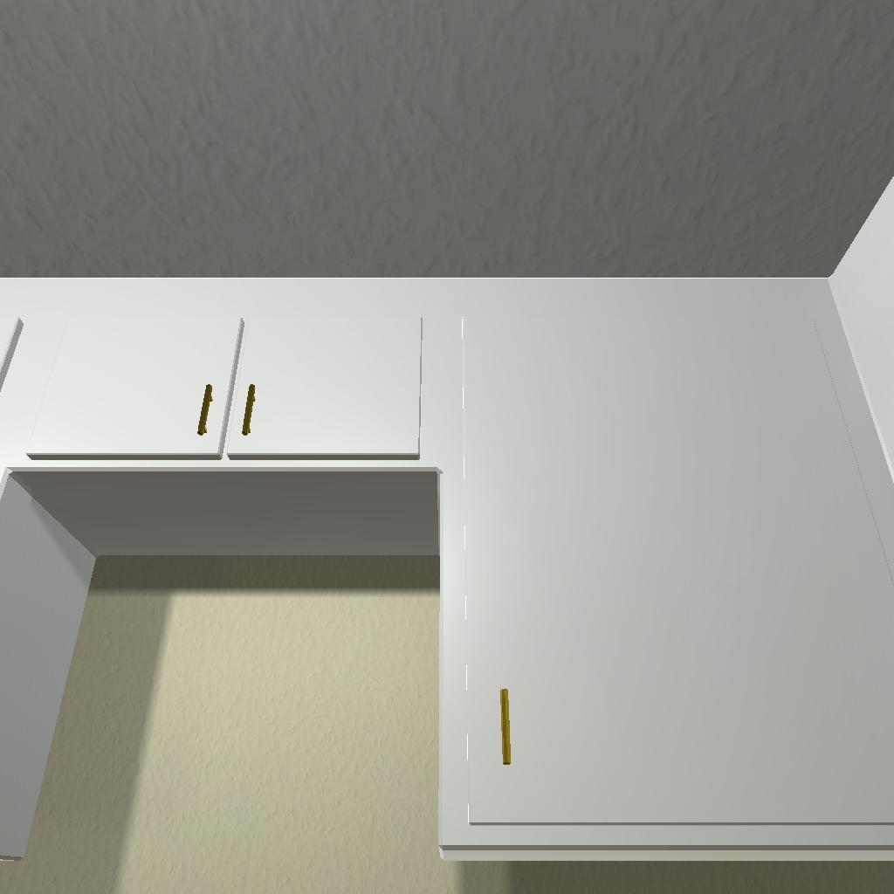

---------------------------------------------------------task: 18---------------------------------------------------------
--------------------------------------------------------------------------------------------------------------------------------------------------------------------
--------------------------------------------------------------------------------------------------------------------------------------------------------------------
Step:--------------------------------------------------------------------------3-------------------------------------------------------------------------------
----------------------------------------
VLM Prompt:
Image1:
Image2:
**Instruction**
1. Analyze the provided images to identify all visible household objects and compare the difference between images (e.h. whether the object is opened or not and taken on hand or not), focusing on those relevant to the task description "put a cool pot in cabinet."
2. Use the analysis of images and the task hint "The agent must find an object of the desired type, pick it up, go to a fridge, cool the object with the fridge, then find the correct location to place it, and put it down there. The agent does not need to use the fridge button or open the fridge to cool the object, and the agent just needs to do action that is "cool the object with the fridge"." to answer the question: what is the most reasonable action in the choices for the task description "put a cool pot in cabinet"?
3. Decide and write the answer using the template: The answer is: (i): , where i is the real number. If there is no desired object in images, search every place based on **Initial Observation** to find the object. And if no one is exactly correct, choose a similar answer.
**Initial Observation**
You are in the middle of a room. Looking quickly around you, you can see cabinet (1-20), countertop (1-3), coffeemachine (1), toaster (1), sink (1), fridge (1), microwave (1), garbagecan (1), drawer (1-3), sinkbasin (1), stoveburner (1-4), shelf (1-3)
**Answer Choices**
(1): go to cabinet 3
(2): go to cabinet 4
(3): go to cabinet 5
(4): go to cabinet 6
(5): go to countertop 1
(6): go to coffeemachine 1
(7): go to cabinet 7
(8): go to toaster 1
(9): go to cabinet 8
(10): go to sink 1
(11): go to microwave 1
(12): go to garbagecan 1
(13): go to cabinet 9
(14): go to cabinet 10
(15): go to countertop 2
(16): go to cabinet 11
(17): go to cabinet 12
(18): go to drawer 1
(19): go to countertop 3
(20): go to drawer 2
(21): go to cabinet 13
(22): go to sinkbasin 1
(23): go to cabinet 14
(24): go to drawer 3
(25): go to stoveburner 1
(26): go to stoveburner 2
(27): go to stoveburner 3
(28): go to cabinet 15
(29): go to stoveburner 4
(30): go to cabinet 16
(31): go to cabinet 17
(32): go to cabinet 18
(33): go to cabinet 19
(34): go to cabinet 20
(35): go to shelf 1
(36): go to shelf 2
(37): go to shelf 3
(38): open cabinet 2
(39): close cabinet 2
(40): examine cabinet 2
**Answer**
Let's think step by step by following the instructions.
----------------------------------------
----------------------------------------
Original Response:
Firstly, by analyzing the images provided, we can see that there is a change in cabinet 2 between Image1 and Image2. In Image1, cabinet 2 is closed, while in Image2, cabinet 2 is open. No other objects are visible in the images, and there is no pot visible in the opened cabinet.
Since the task description is "put a cool pot in cabinet," we must find a pot, cool it with the fridge, and then place it in a cabinet. Based on the Initial Observation, there are multiple cabinets numbered from 1 to 20, but we do not see any pots in the images. Therefore, we must search the environment for a pot.
Considering the task hint that the agent does not need to use the fridge button or open the fridge to cool the object, the most reasonable action would be to first find a pot. Since we cannot see a pot in the images, we must search every place that could potentially have a pot, such as the countertop, drawers, shelves, or near the stove burners.
However, given the answer choices provided, none of them directly indicate searching for a pot or cooling the pot with the fridge. The closest action that aligns with the task description is to open a cabinet, but since cabinet 2 is already open and we see no pot inside, we can eliminate options (38), (39), and (40).
Based on the given choices, the most similar answer to the task would be to go to another cabinet, as it's possible that a pot might be stored there. Since we have no specific information on which cabinet the pot may be in, we can choose any cabinet number that has not been opened yet.
The answer is: (3): go to cabinet 5.
----------------------------------------
----------------------------------------
>>> Refine Original VLM Response and Get Pure Action: go to cabinet 5
----------------------------------------
-----------------------------------------------------------------
Running time: 25.84580397605896 seconds
Total Money: 8.671850000000001
-----------------------------------------------------------------
-----------------------------------------------------------------
Text Observation:You arrive at loc 4. The cabinet 5 is closed.
-----------------------------------------------------------------
UNSUCCEED